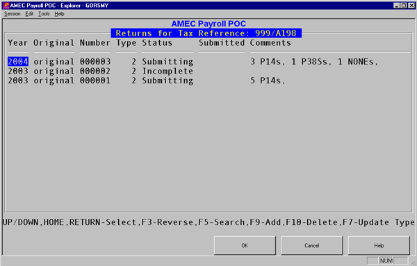

<?xml version="1.0" encoding="utf-8"?>
<html lang="en" xmlns:MadCap="http://www.madcapsoftware.com/Schemas/MadCap.xsd">
    <head><title>End of Year Workbench</title>
    </head>
    <body>
        <MadCap:concept term="Topics" />
        <h1 class="print">End of Year Workbench</h1>
        <p>If you have more than one tax reference, you can select the scheme you wish to work with. You can then select which tax year you want to work with, as shown in the screen shot below.</p>
        <p align="center">
            
        </p>
        <ul>
            <li><strong>Year</strong> - The year in which the tax year began. </li>
            <li><strong>Original</strong> or <strong>Amended</strong> - An amended return is made if you have to adjust the figures submitted on the original.</li>
            <li><strong>Number</strong> - Used to uniquely identify returns. You can have more than one return per year if you use the test in live facility.</li>
            <li><strong>Type</strong> - There are three possible types of return:</li>
        </ul>
        <blockquote dir="ltr" style="MARGIN-RIGHT: 0px;">
            <p><strong>0</strong> = a live submission.<br /><strong>1</strong> = a test in live submission.<br /><strong>2</strong> = a vendor test (only <MadCap:variable name="General.ProductName" /> can submit vendor tests).</p>
        </blockquote>
        <ul>
            <li><strong>Status</strong> - This can be one of the following:</li>
        </ul>
        <blockquote dir="ltr" style="MARGIN-RIGHT: 0px;">
            <p><strong>Incomplete</strong> = not yet validated.<br /><strong>Complete</strong> = a validated return.<br /><strong>Submitting</strong> = in the process of submission.<br /><strong>Submitted</strong> = a return that has been successfully submitted.</p>
        </blockquote>
        <ul>
            <li><strong>Submitted</strong> - The date submitted.</li>
            <li><strong>Comments</strong> - Used to give the count of the various forms.</li>
        </ul>
        <p>When you select or create a return, you are taken to a workbench for that return.</p>
    </body>
</html>